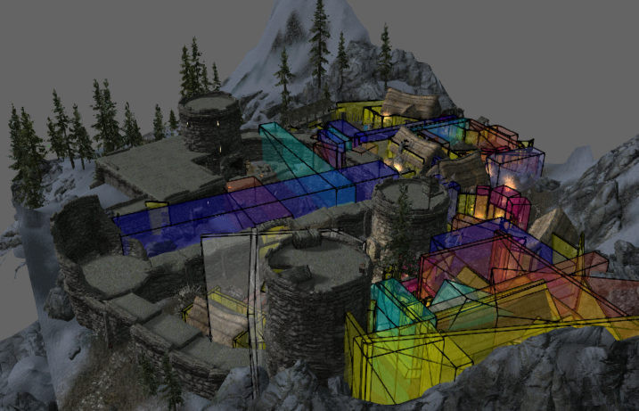
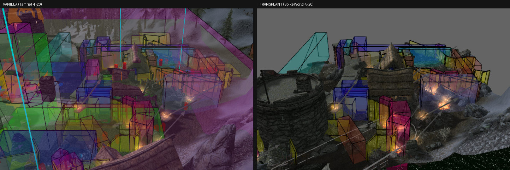
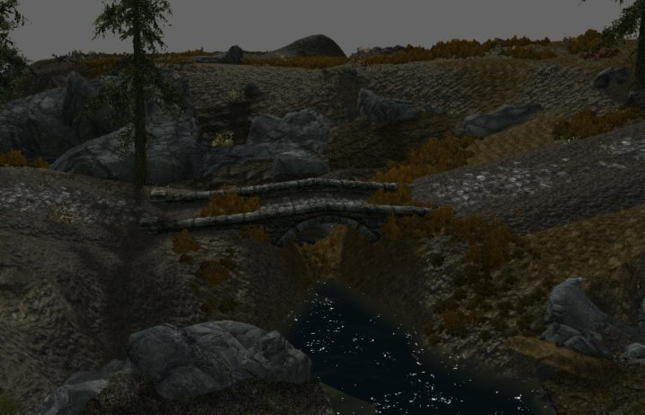
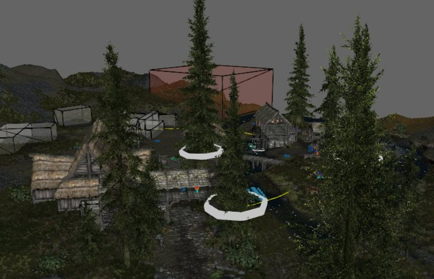
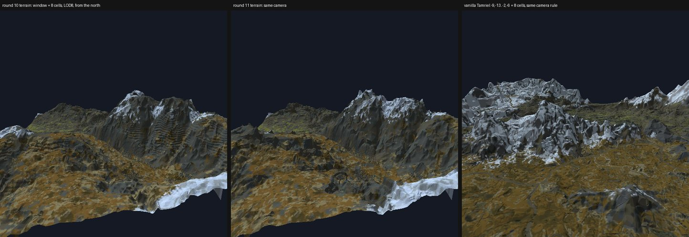
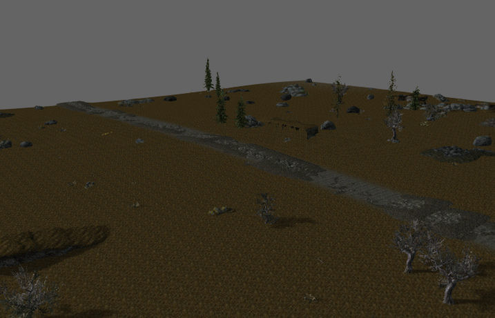

Skyrim Worldspace MCP
Skyrim, generated.
A Model Context Protocol server that gives AI models the tools to build complete Skyrim Special Edition worlds: mountains, rivers, roads, forts, and towns that look like Bethesda made them and work in-game.

80
MCP tools
272
vanilla sites in the transplant library, 263 passing headless checks
8×8
cell region from one command, built twice byte-identical
1,398
snap rules learned from Bethesda’s own kit pieces
34,313
gameplay links in the latest region, 0 unresolved
7/7
walkability routes passed, bridge deck included
The idea.
Hand a model an empty heightmap and a prompt, like “here is Hammerfell, generate it,” and get back a playable world with no manual touch-up.
Tools, not scripts
Any AI client can drive it.
MCP is an open standard, so the same server works with cloud assistants or a fully local Qwen model. Tools preview options first, then commit fingerprinted draft revisions, so a model can explore safely and every result is reproducible from its seed.
Proof, not vibes
Every build is verified.
Plugins are written byte-for-byte, then read back independently with Mutagen. A sandboxed Creation Kit with a custom C++ camera plug-in captures frames bound to exact build hashes, and an unattended harness boots the real game, walks NPCs along test routes, and restores the install file-for-file afterwards.
Terrain
Mountain ranges laid out at world scale, carved rivers, lakes, and coastline, with slopes held to what Bethesda’s own landscape uses.
Biomes
Forests, tundra, and cliffs filled at vanilla density from terrain-matched vanilla patches, with blended edges and a forest floor that follows its trees.
Roads & bridges
Highways and spurs from vanilla road pieces with blended shoulders. Any road that would cross water without a bridge is refused.
Navmesh
Generated for open ground, sites, and bridge decks, then stitched across merged regions so NPC routes connect from tile to tile.
Living content
Linked cave interiors, doors, leveled bandits, wildlife, regions, locations, and map markers, all measured against vanilla.
Distant LOD
xLODGen runs unattended, so far-off terrain and trees match the build that was just written.
Learn from Bethesda.
Procedural scenes look procedural. So the engine starts from complete Bethesda-authored locations, then climbs a ladder of variation, learning densities and snap rules from the game itself.
Highlighted rungs work today.

The latest build.
Milestone 3 is a full 8×8-cell region: generated terrain and river, transplanted sites, a highway with a vanilla bridge, biome fill, navmesh, and LOD, written by one command.



Top-down pipeline.
Each stage either accepts a supplied layer or generates it, and never overwrites what it was given.
- Land
- Climate & biomes
- Rivers & lakes
- Site plan
- Roads
- Terrain detail
- Sites
- Wilderness fill
- Interiors
- Gameplay records
- LOD
- Automated QA

Stack
Built with
Developed with a team of AI coding agents (Claude, Codex, DeepSeek, and a local Qwen model) working under one shared set of project rules.
Status
In active development.
Milestone 1, the Helgen transplant, is accepted. Milestone 3, a full region, waits on its final mountain pass and an in-game walk-through. The repository is private while the core pipeline matures. Follow along on GitHub or X for updates.
Updated October 28, 2026.